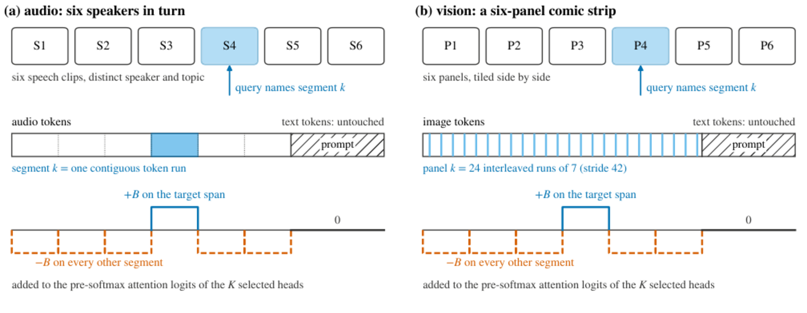
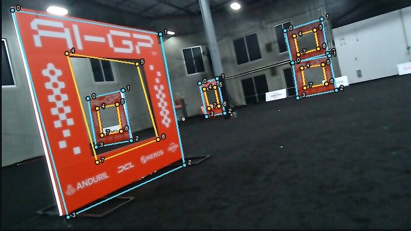

I work on mechanistic interpretability and on robots. Right now I am building Physical Interp Labs, an early-stage research project applying interpretability to models that act in the physical world.
Physical Interp Labs
Bringing mechanistic interpretability to physical AI.
Robot policies, vision-language-action models, and world models make decisions with real consequences, and almost all of them are evaluated by running the policy and counting successes. That says whether a model works on the cases you tried and nothing about why. Physical Interp Labs is about finding the features and circuits that drive an action, and using them to predict, steer, and verify behavior before it reaches hardware. Project page · Repository
The starting point is my paper Inherited Heads. An audio language model is a text model with an audio encoder attached. Ask it which of several speakers in a recording to describe, and a small set of attention heads makes that choice. Those heads are not new. They are the same heads that do the job in the text-only model the audio model was built from. You can find them by looking at the text model alone, carry them over unchanged, and use them to steer the audio model to whichever speaker you want, with no training.
That is the thread Physical Interp Labs pulls on. Vision-language-action models are built the same way, on top of a vision-language backbone with an action head attached. If the components that drive an action are inherited from the backbone, they can be found by studying the backbone, and a policy can be read, and possibly corrected, before it ever flies.

Bojro Das. Inherited Heads: Audio language models track speakers with their text backbone's attention, and an attention-mass ranking retrieves a different set. arXiv:2609.14174, September 2026. Sole author. Code and results.
Robotics
In September 2026 my team was one of 15 selected from over 3,000 for the in-person qualifier of the Anduril AI Grand Prix, an autonomous drone race. I trained the flight policy with reinforcement learning in Isaac Lab, built the gate detector that runs on the drone's Jetson, and found the sim-to-real faults through hardware-in-the-loop testing: a reversed pitch axis, mis-scaled stick commands, and a control link running at a different rate than the policy assumed. Every one of those lived inside the policy's inputs and outputs, which is a large part of why I care about reading networks before flying them.

At Cornell I am a software engineer on Cornell University Autonomous Drone (CUAD), where I built the real-time stereo-depth obstacle-localization pipeline for the IARC competition and a gesture-to-flight-command classifier, both as ROS 2 nodes. Before that I spent years in VEX Robotics with team 871X and led the team to the 1st seed at the VEX Robotics World Championship.
Selected work
-
Inherited Heads
Paper, code, and results. Three audio language models analysed at head level against their text backbones, with every figure in the paper traceable to a logged run.
-
AI Grand Prix: flight policy and gate detector
Isaac Lab training stack, hardware-in-the-loop findings, and the YOLOv8n-pose perception that flew, written up as a team paper in the repository.
-
PLOT-DAS on the MIB benchmark
Independent evaluation of a published method for locating where a language model represents a causal variable, run against the public leaderboard on a single consumer GPU.
-
Causal Abstractions OT
A framework for causal abstraction experiments comparing Gromov-Wasserstein, OT, fused GW, and DAS on the same held-out counterfactual splits.
-
Drone telemetry gateway
Go service ingesting telemetry from 1,000 simulated drones over MQTT. 5,000 writes per second to PostgreSQL on a 2-vCPU EC2 instance, with zero accepted-message loss through a measured database outage.
-
Gait
An iOS app for horse owners, live on the App Store. On-device motion classification logs ride gaits from 50 Hz accelerometer data. Shipped solo in under four months; $2.4K ARR run rate within two weeks of launch.
-
Debrief
A voice agent that interviews applicants and verifies their claims against GitHub as they talk. Built in about three hours at the c0mpiled-11 Startup School hackathon in San Francisco.
-
MedTranslate, Orderly AI, BigRedBudget, internship-tracker
Smaller things: a plain-language companion for doctor visits, an AI tab grouper for Chrome, a Cornell dining-balance tool, and a cron that watches internship postings.
Elsewhere
- 2026Software engineer intern at Global Key Advisors, San Francisco. Owned the pipeline classifying 1.4M+ SEC filings into 101 event categories and built a 1.5M-relationship Neo4j knowledge graph behind a citation-verified chatbot.
- Aug 2026Attended NEMI 2026, the third New England Mechanistic Interpretability Workshop, at Boston University.
- 2026Y Combinator Startup School.
- 2026Undergraduate researcher at Cornell's Math + AI Lab.
Off the clock
At the gym most days. Currently watching Vinland Saga. Zetamac score of 91; challenges welcome.